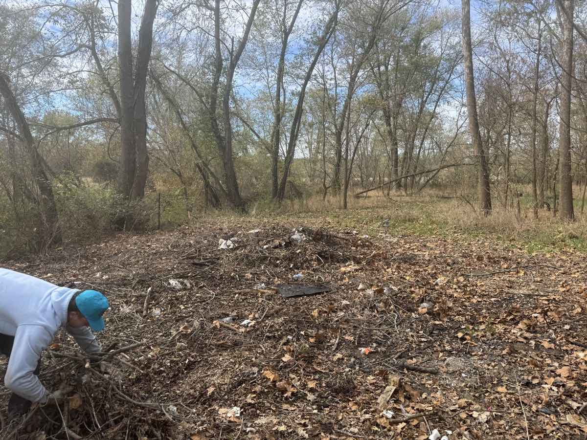

If you're trying to figure out what brush hogging in Columbia, MO costs, here's the short version: most jobs run about $75 to $200 an acre, with small jobs priced by the hour or as a flat day rate. I'm Chris Kurtz, owner of Atlas Excavation & Demolition. We mow down overgrown fields, pastures, and trails for landowners all over Columbia, MO and the surrounding counties, so the numbers below are real ranges, not guesses.
This post covers what brush hogging actually is, what it costs around Mid-Missouri, what a brush hog can and can't cut, when to do it, and how it's different from forestry mulching. By the end you'll know whether a brush hog is the right tool for your land or whether it'll take something heavier.
Quick Answer: Brush hogging in Columbia, MO typically costs $75 to $200 per acre, depending on how thick the growth is, with small jobs billed hourly (about $100 to $150) or as a flat day rate. A brush hog mows grass, weeds, briars, and saplings up to 2 to 3 inches. It's a maintenance tool that keeps a field open. It does not remove stumps or roots, so growth comes back. For heavier, woody clearing that lasts, forestry mulching is the better fit. Atlas does both. Call (573) 234-6641 or get a free on-site walkthrough.
In This Guide:
What Brush Hogging Actually Is (and What It Isn't)
Brush hogging is mowing, but heavy duty. We pull a thick rotary cutter behind a tractor, and the blades spin flat to knock down tall grass, weeds, briars, and saplings a few inches off the ground in one pass. Folks around here call it bush hogging too. That's after Bush Hog, the brand of cutter, and it means the same thing.
It's the most basic kind of land clearing, and the most affordable. A brush hog turns a field you can't walk through back into open ground in an afternoon. That's the upside.
Here's the part a lot of companies won't tell you straight: brush hogging does not kill anything. It cuts what's above the ground and leaves every root and stump in place. The grass, the briars, the saplings, they all grow right back. That's not a flaw, it's just what the tool does. Brush hogging is a maintenance tool for keeping open ground open, not a way to clear land for good. If you want brush and small trees gone permanently, that's a different machine, and I'll get to it below.
What Brush Hogging Costs in Columbia, MO
Brush hogging is priced by the acre most of the time, because that's what scales with the work. Here's where jobs around Columbia and Mid-Missouri land, based on how thick the growth is.
| Field Condition | What's There | Typical Cost |
|---|---|---|
| Light | Open pasture, tall grass, weeds, light brush | $75 to $125 / acre |
| Moderate | Thick brush, briars, bush honeysuckle, saplings to a couple inches | $125 to $200 / acre |
| Heavy / neglected | Field gone several years, dense saplings near the cutter's limit | $200 to $300+ / acre or hourly |
| Small jobs | Under an acre or two, priced by the hour or a flat day rate | $100 to $150 / hour |
A few things move the number inside those ranges. Acreage is the big one. A large open field gets a per-acre discount, while a small lot often hits a minimum or a flat half-day rate. There's a real cost just to load the tractor and cutter and haul them out to your place, so a tiny job rarely comes in cheap per acre.
Terrain matters too. Steep ground, wet spots, rocks, and hidden debris all slow the cut and add risk to the equipment. Saplings near the top of what a brush hog can handle push the price up because the cutting is slower and harder on the machine. For reference, the University of Missouri Extension custom rate guide tracks farm brush hogging rates across the state, though those neighbor-to-neighbor farm rates run lower than a fully insured commercial service that shows up with a written estimate and a clean job.
Worth knowing: if you're brush hogging as part of a bigger cleanup, like reclaiming a pasture or opening a lot, it's usually cheaper to bundle the work. The equipment is already on site, so adding a fence line or a section of heavier clearing saves a second trip out. Ask about it when we walk the property. See our land clearing cost guide for Columbia, MO for how the bigger jobs price out.
Brush Hogging vs. Forestry Mulching: Which Does Your Land Need?
This is the question I get more than any other, and getting it wrong wastes your money. Brush hogging and forestry mulching both clear overgrown land, but they're different tools for different jobs.
Brush hogging mows everything down with a rotary cutter and leaves the roots and stumps in place. It handles grass, weeds, briars, and saplings up to about 2 to 3 inches. It's fast, it's cheap, and the growth comes back. That makes it the right call for keeping an open field, pasture, or trail mowed on a schedule.
Forestry mulching uses a machine with a rotating drum of teeth that grinds standing brush and trees up to 8 to 12 inches into mulch right where they stand. The soil stays intact, there are no piles to burn or haul, and the heavier growth is gone for a lot longer. It costs more per acre, but it does what a brush hog can't.
The simple way to choose:
- Pick brush hogging if the ground is mostly grass and light brush and you want to keep it open. Think yearly pasture upkeep, food plots, trails, and weed knockdown.
- Pick forestry mulching if the land has real woody growth, cedar, locust, thick honeysuckle, or saplings bigger than a few inches, or if you want it cleared and staying cleared. Think reclaiming a field that's gone to brush, prepping a lot for a build, or opening woods.
Atlas runs both. When you call, I'll tell you straight which one your property actually needs, even when the cheaper answer is the right one. We'd rather brush hog your field today and earn the mulching job when you're ready than sell you the wrong service now.
Not Sure If You Need a Brush Hog or a Mulcher?
Atlas walks your property, tells you straight which one fits, and hands you a flat written price. No pressure, no upsell.
Get Your Instant Estimate Or Call (573) 234-6641When to Brush Hog in Mid-Missouri
Timing changes how clean the cut is and how long it lasts. Two things matter around here: the season and the soil.
Late summer and fall are the best windows for brush hogging in Mid-Missouri. By late summer the spring growth has slowed down, the ground is firm, and one good cut carries a field through winter. Fall gives cool temperatures and slower regrowth, so the cut stays clean longer. Late spring works too, usually late April into May, once the soil is firm enough to hold a tractor without rutting.
The thing to avoid is wet ground. A brush hog and tractor will tear up soft pasture in early spring or after a heavy rain, and our wet springs out here make that a real risk. We try to stay off the field until it's dried out enough to cut clean.
How often you brush hog depends on your goal:
- Keep a field open: once or twice a year is plenty for most pastures and recreational ground.
- Manage forage or fight fast growth: every 6 to 8 weeks through the peak growing season.
- Reclaim a neglected field: a heavy first cut to get it back, then a regular schedule to hold it.
The reason a schedule pays off here is what grows back. Cedar and bush honeysuckle come back fast in Mid-Missouri, and a field left alone for a few years turns into brush that's past what a brush hog can handle. Staying ahead of it with a yearly cut keeps the land easy and cheap to manage. Let it go, and you're looking at a forestry mulching job instead of a mow.
What a Brush Hog Can and Can't Cut
Knowing the limits of the tool saves everybody a headache. A standard brush hog handles:
- Tall grass and weeds, even chest high
- Briars, brambles, and vines
- Light to moderate brush
- Saplings up to about 2 to 3 inches across
What it can't do is just as important. A brush hog won't take down trees bigger than a few inches, it won't grind or pull stumps, and it won't kill the root systems, so woody growth comes right back. It also can't tell a buried rock or a chunk of old fence post from a sapling, which is why we walk a new field first and flag anything that could damage the cutter or get thrown.
If your land has growth past what a brush hog can take, that's not a problem, it's just a different machine. We'll bring the forestry mulcher for the heavy stuff and the brush hog for the open ground, and on a lot of properties we use both. If the cleared ground is headed for a build or a replant, we can roll it into site preparation and grade it while we're out there.
Where We Brush Hog
Atlas brush hogs fields, pastures, and trails across Columbia, Ashland, Harrisburg, Hallsville, Boonville, Fulton, Centralia, Rocheport, and the rural parts of Boone, Audrain, Callaway, Cole, Howard, Cooper, and Moniteau counties. If you've got acreage within about 45 minutes of Columbia, we'll come walk it.
Mid-Missouri ground has its own quirks. A lot of the pasture out here was last actively farmed years ago, and our wet springs let bush honeysuckle and cedar take hold quick. Hilly, clay-heavy lots need a tractor with the weight and traction to cut on a slope without tearing the field up. Knowing the terrain and what grows in it is part of getting a clean cut without rutting your ground or beating up the equipment. For the full picture of what we do beyond mowing, see our overview of land clearing services in Mid-Missouri.
Frequently Asked Questions
How much does brush hogging cost in Columbia, MO?
Brush hogging in Columbia, MO usually runs about $75 to $200 per acre for most jobs. Open pasture with light grass and weeds sits at the low end. A field that has gone two or three years with saplings and thick brush coming in lands at the high end. Small jobs are often priced by the hour, around $100 to $150, or as a flat half-day or day rate, because there is a real cost just to load up and haul the equipment out to your place. Big open acreage gets a per-acre discount. The honest answer is that density, acreage, and terrain set the number, so we walk the property with you and give you a flat written price before we start.
What is brush hogging?
Brush hogging is mowing down overgrown vegetation with a heavy rotary cutter pulled behind a tractor. People also call it bush hogging, after the Bush Hog brand of cutter. The blades spin flat and knock down tall grass, weeds, briars, and saplings a few inches above the ground in one pass. It is the most basic and most affordable form of land clearing. It does not pull stumps or kill roots, so it is a maintenance tool for keeping a field, pasture, or trail open, not a one-time permanent clearing method. For brush and small trees you want gone for good, forestry mulching is the better fit.
How often should you brush hog a field in Missouri?
For a field you want to keep open and usable around Mid-Missouri, once or twice a year is the common rhythm. A single cut in late summer or fall keeps most pastures and recreational ground from going back to brush. If you are managing forage quality or fighting fast growth, every 6 to 8 weeks through the peak growing season is closer to right. A field that has been ignored for years needs a heavy first cut to get it back, and then a regular schedule keeps it that way. Cedar and bush honeysuckle come back fast here, so a property that gets brush hogged on a schedule stays far easier and cheaper to manage than one you let go.
What is the best time of year to brush hog in Mid-Missouri?
Late summer and fall are usually the best windows for brush hogging in Mid-Missouri. By late summer the spring growth has slowed, the ground is firm, and one good cut carries the field through winter. Fall gives cool temperatures and slower regrowth, which makes for a clean cut that lasts. Late spring, around late April into May, also works once the soil is firm enough to hold the tractor without rutting. We try to stay off wet ground in early spring and after heavy rain, since a brush hog and tractor will tear up soft pasture. If you have a specific goal, like clearing before deer season or knocking weeds down before they seed, we time the cut around that.
What is the difference between brush hogging and forestry mulching?
Brush hogging mows vegetation down with a rotary cutter and leaves the roots and stumps in place, so it handles grass, weeds, briars, and saplings up to about 2 to 3 inches and the growth comes back. Forestry mulching uses a drum of teeth that grinds standing brush and trees up to 8 to 12 inches into mulch on the ground, soil left intact, and it clears far heavier growth more permanently. Brush hogging is the cheaper maintenance option for keeping open ground open. Forestry mulching is what you want for thick, woody, neglected land or for clearing a lot for a build. Atlas does both, so we tell you straight which one your property actually needs.
Get a Real Price From Atlas
If you've got an overgrown field, pasture, or trail in Columbia or anywhere in Mid-Missouri, we're glad to come walk it and put a flat written price in front of you. No pressure, no surprise fees, and a straight answer on whether a brush hog or something heavier is the right call.
- Phone: (573) 234-6641
- Email: hello@deployatlas.com
- Online: Instant estimate form
For related reading, see our land clearing cost guide for Columbia, MO, our breakdown of forestry mulching in Columbia, MO, and our guide to fence line clearing in Mid-Missouri.